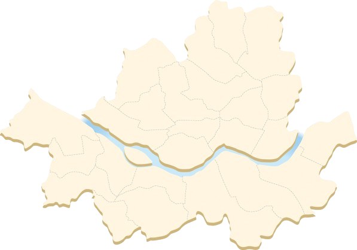

서울시 권역별 실시간
대기환경
현황
서울 전체 평균
미세먼지(㎍/㎥)
초미세먼지농도(㎍/㎥)
오존(ppm)
일산화탄소농도(ppm)
아황산가스농도(ppm)
이산화질소농도(ppm)
통합대기환경등급
측정일시

중구
종로구
용산구
은평구
서대문구
마포구
광진구
성동구
중랑구
동대문구
성북구
도봉구
강북구
노원구
강서구
구로구
영등포구
동작구
관악구
금천구
양천구
강남구
서초구
송파구
강동구
※정확한 정보가 궁금하시다면 각 구를 클릭하여주세요!
대기환경 현황
미세먼지(㎍/㎥)
초미세먼지농도(㎍/㎥)
오존(ppm)
일산화탄소농도(ppm)
아황산가스농도(ppm)
이산화질소농도(ppm)
통합대기환경등급
측정일시